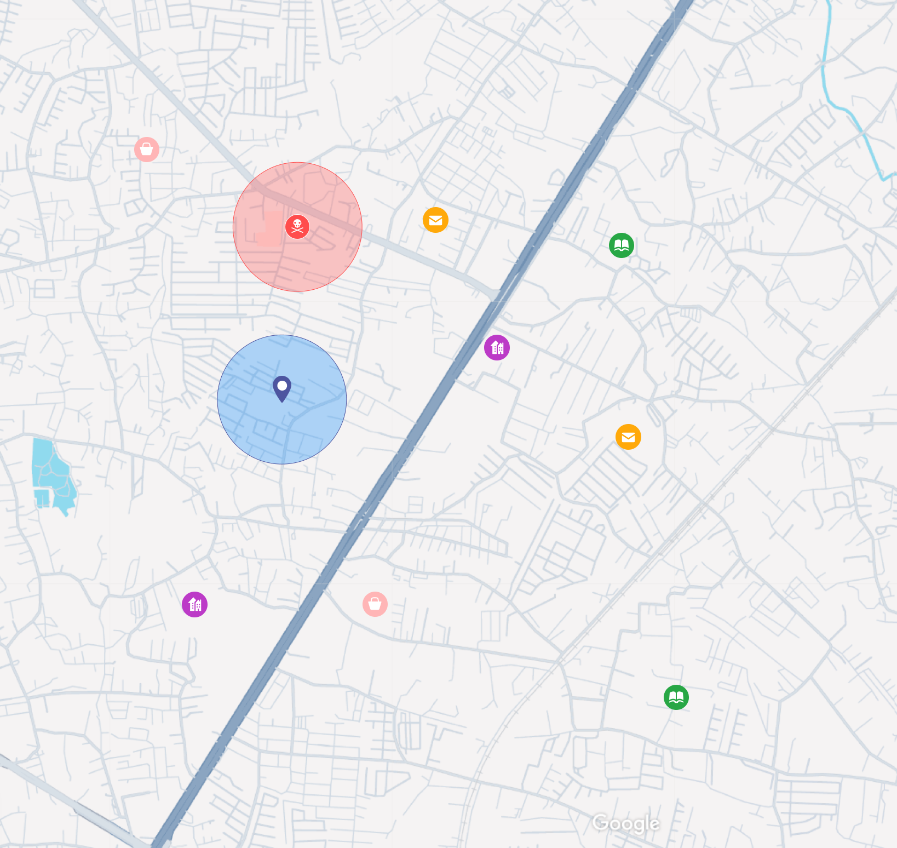
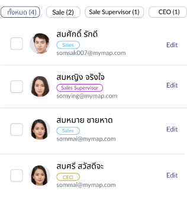
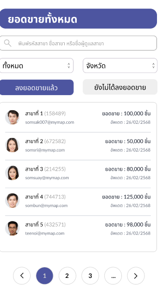
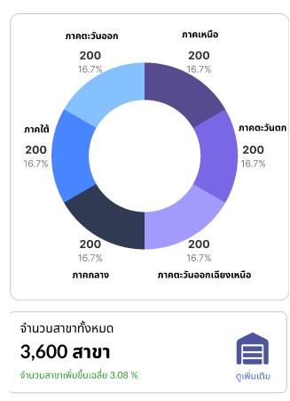

MyMap
Your Location,
Your Advantage
บอกลาความยุ่งยาก บริหารธุรกิจให้ราบรื่น
ด้วย Feature
CRUD
Create, Update and Delete
ค้นหาและบริหารจัดการสาขาด้วยแผนที่
-
ระบบช่วยให้สามารถค้นหาสาขาของตนเอง รวมถึงสาขาคู่แข่งหรือสถานที่ที่สนใจบริเวณโดยรอบได้อย่าง่ายดายผ่านการค้นหาด้วย “คีย์เวิร์ด”
-
มีฟีเจอร์สำหรับ เพิ่ม ลบ และแก้ไข ข้อมูลสาขาได้อย่างสะดวก
-
ผู้ใช้งานสามารถคลิกที่ “หมุด (Pin)” บนแผนที่ในตำแหน่งที่ต้องการเพื่อดำเนินการจัดการข้อมูลสาขาได้ทันที

จัดการข้อมูลพนักงาน
-
ระบบสามารถ เพิ่ม ลบ และ แก้ไขข้อมูลของพนักงานภายในบริษัทได้อย่างสะดวก
-
รองรับการจัดเก็บข้อมูลสำคัญ เช่น ชื่อ-นามสกุล ตำแหน่งงาน สาขาที่ดูแล และข้อมูลอื่น ๆ
-
ช่วยให้การบริหารจัดการทรัพยากรบุคคลเป็นไปอย่างมีประสิทธิภาพ และลดข้อผิดพลาดในการจัดเก็บข้อมูล

จัดการยอดขาย
-
สามารถ เพิ่ม ลบ และ แก้ไขข้อมูลยอดขายของแต่ละเดือนได้อย่างง่ายดาย
-
รองรับการบันทึกยอดขายแยกตามเดือน เพื่อให้สามารถติดตามผลประกอบการในแต่ละช่วงเวลาได้อย่างชัดเจน

แสดงรายงานข้อมูลผ่านกราฟ
-
ระบบสามารถ แสดงข้อมูลสาขา, ยอดขาย, และ จำนวนพนักงาน ในรูปแบบกราฟหลากหลายประเภท เช่น กราฟแท่ง (Bar chart), กราฟเส้น (Line chart), หรือกราฟวงกลม (Pie chart)
-
มีการ แสดงเส้นมัธยฐาน (Median Line) บนกราฟ เพื่อให้ผู้ใช้งานสามารถมองเห็น "ค่ากลาง" ของข้อมูลแต่ละประเภทได้อย่างชัดเจน
-
รองรับการ ดูรายงานภาพรวม (Dashboard) เพื่อวิเคราะห์แนวโน้มและเปรียบเทียบประสิทธิภาพของแต่ละสาขาได้ง่ายยิ่งขึ้น

Our Core Values
Data-Driven Decision Making
ให้ความสำคัญกับการตัดสินใจบนพื้นฐานของข้อมูล ด้วยการแสดงผลข้อมูลในรูปแบบกราฟและรายงานที่ชัดเจน พร้อมเส้นมัธยฐานเพื่อช่วยวิเคราะห์ภาพรวม
Operational Efficiency
มุ่งเน้นการบริหารจัดการที่ ง่าย สะดวก และรวดเร็ว ทั้งในเรื่องของสาขา พนักงาน และยอดขาย ด้วยระบบ CRUD ที่ใช้งานง่าย
Operational Efficiency
เพิ่มประสิทธิภาพการทำงาน ด้วยระบบที่ช่วยลดเวลาการจัดการข้อมูลและลดความผิดพลาดที่เกิดจากการจัดการด้วยมือ
Accessibility & Visualization
ทำให้ข้อมูลธุรกิจเข้าถึงได้ง่ายผ่านแผนที่และกราฟต่าง ๆ เพื่อให้เห็นภาพรวมขององค์กรอย่างเป็นระบบ
Scalability & Flexibility
ออกแบบมาเพื่อรองรับการเติบโตของธุรกิจ ไม่ว่าจะเพิ่มจำนวนสาขา พนักงาน หรือยอดขาย ระบบสามารถปรับขยายและจัดการได้อย่างยืดหยุ่น
Try now!!.
Click
MyMap Your Location, Your Advantage.
My order X Cluster 4
Thankyou !!!